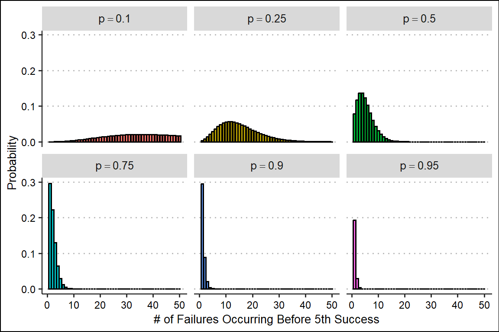
Negative Binommial Regression Article
1 Background
1.1 Understanding the Technique
1.1.1 The Negative Binomial Distribution
Negative binomial regression extends the linear least-squares regression model to data that fits a negative binomial distribution. My wording there is careful, because most often the data doesn’t fit what the negative binomial is actually modeled after. The negative binomial distribution measures the probability of \(X\) failures occuring before the \(n\)-th success, where the probability of a success is \(p\). For example, the probability of getting \(X = 6\) tails before getting the \(n = 3\) heads, where the the probability of getting a head or tail \(p = 0.5\).
\[\begin{align*} P(X=x | n, p) = f_x(x,n,p) = \binom{x+n-1}{n-1} p^n (1-p)^x \end{align*}\]
We can plot the probability mass function (PMF) to see the probability of \(x\) failures occuring for every \(X\), while changing the probability of success and keeping our number of success targets constant:
To set up the regression model, we need to work out the mean and variance of our distribution (statisticsmatt 2020).
Expected Value / Mean:
\[\begin{align*} E(X) =& \sum_{x=0}^{\infty} x \cdot f_x(x,n,p) \\ =& \sum_{x=0}^{\infty} x \cdot \binom{n+x-1}{n-1}\,p^n(1-p)^x \\ =& np^{-1}(1-p)\cdot \sum_{x=1}^{\infty}\frac{(n+x-1)}{n!(x-1)!} p^{n+1}(1-p)^{x-1} \\ (\text{Let} \, y = x-1) =& np^{-1}(1-p)\cdot \sum_{y=0}^{\infty}\frac{(n+y)!}{n!\,y!}p^{n+1}(1-p)^y \\ =& \frac{n(1-p)}{p}\cdot \sum_{y=0}^{\infty}\binom{(n+1)+y-1}{y}\,p^{n+1}(1-p)^y \\ =& \frac{n(1-p)}{p} \end{align*}\]
The second moment of the negative binomial distribution is given by:
\[\begin{align*} E[X(X-1)] &= \sum_{x=0}^{\infty} x(x-1) f_x(x) = \sum_{x=0}^{\infty} x(x-1)\frac{(n+x-1)!}{(n-1 !x!}p^n(1-p)^x \\ &= \frac{n(n+1)(1-p)^2}{p^2}\cdot \sum_{x=2}^{\infty} \frac{[(n+2)+(x-2)-1]!}{(n+1)!(x-2)!}\, p^{n+2}(1-p)^{x-2} \\ (\text{Let }y = x-2) &= \frac{n(n+1)(1-p)^2}{p^2}\cdot \sum_{y=0}^{\infty}\binom{(n+2)+y-1}{y}\, p^{n+2}(1-p)^y \\ &= \frac{n(n+1)(1-p)^2}{p^2} \end{align*}\]
To solve for the variance:
\[\begin{align*} Var(x) &= E(x^2) - E(x)^2 = E(x^2)-E(x)+E(x)-E(x)^2 \\ &= E[x(x-1)]+E(x)-E(x)^2 \\ &= \frac{n(n+1)(1-p)^2}{p^2} + \frac{n(1-p)}{p} - \frac{n^2(1-p)^2}{p^2} \\ &= \frac{n^2(1-p)^2 + n(1-p)^2 + np(1-p) - n^2(1-p)^2}{p^2} \\ &= \frac{n(1-p)[(1-p)+p]}{p^2} \\ &= \frac{n(1-p)}{p^2} \end{align*}\]
We can verify this numerically. Here I simulate 10,000 negative binomial distributed datasets with \(n = 20\) successes waiting for, probability \(p = 0.75\) and sample size \(N=25\):
Code
set.seed(13)
sims = 10000 # Simulations
n = 20 # Successes
N = 25 # Sample Size
p = 0.75 # Probability
means <- rep(NA, sims) #Place to store means
vars <- rep(NA, sims) #Place to store variances
for(i in 1:sims){
nbinom_dat <- rnbinom(n = N, size = n, prob = p) #Simulate random data
means[i] <- mean(nbinom_dat) #Store the mean of the data
vars[i] <- var(nbinom_dat) #Store the variance of the data
}Theoretically we’d expect our mean number of failures to be: \[\begin{align*} \frac{n(1-p)}{p} = \frac{20(1-0.75)}{0.75} = 6.6\bar{6} \end{align*}\]
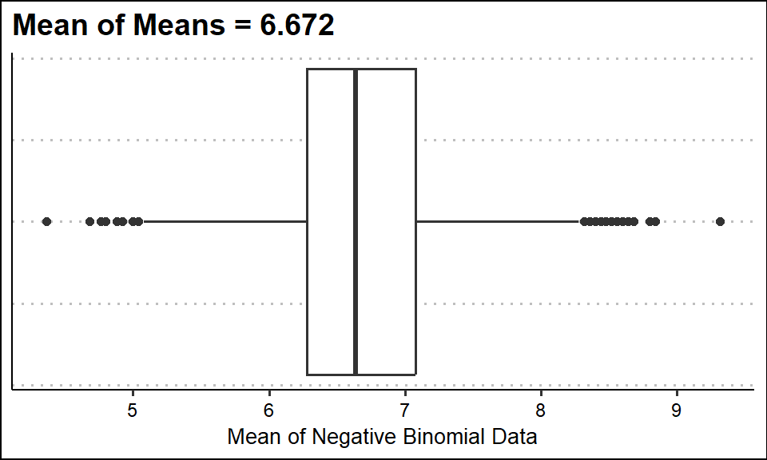
And our variance in the number of failures to be:
\[\begin{align*} \frac{n(1-p)}{p^2} = \frac{20(1-0.75)}{(0.75)^2} = 8.8\bar{8} \end{align*}\]
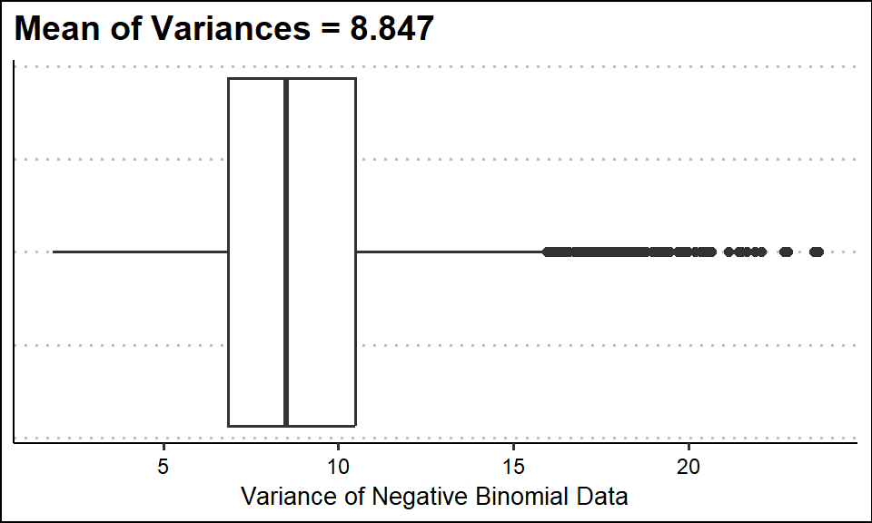
Note that the boxplot shows the median of all the datasets.
For some context, the variance of the negative binomial distribution approaches the variance of a poisson distribution as the number of failures increases while keeping the mean and successes the same:
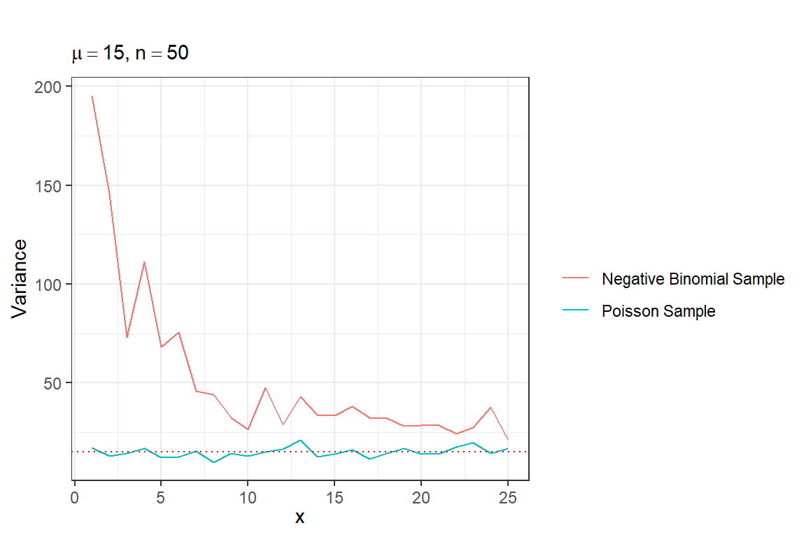
1.1.2 Negative Binomial Regression
Where the typical linear regression goes as follows: \[\begin{align*} Y_i = \beta_0 + \beta_1 x_{1i} + \beta_2 x_{2i} + \cdots + \beta_{p-1} x_{(p-1)i} + \epsilon_i \end{align*}\]
Since \(Y_i\) is assumed to be continuous, both sides of the equation can range from \((-\infty, \infty)\). To model a variable that is based on counts, and therefore strictly \(>0\), we have to transform the data to sit in the \((-\infty, \infty)\) range, and this can be achieved with a log transformation:
\[\begin{align*} log(\mu_{Y_i|x_i}) = \beta_0 + \beta_1 x_{1i} + \cdots + \beta_{p-1} x_{(p-1)i} \end{align*}\] where \(\mu_{Y_i|x_i}\) is the mean of the Negative Binomial distribution from which the \(i\text{th}\) response is drawn.
1.2 The Study
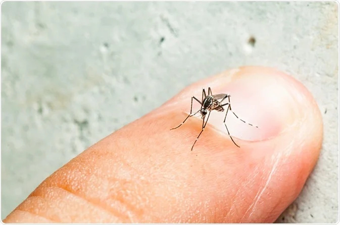
Everybody hates mosquitoes, especially Australians. Aedes notoscriptus mosquitoes, also known as the Australian backyard mosquito, are particularly harmful in any area where they’re found. These mosquitoes have been found to spread Mycobacterium ulcerans in humans and other animals, resulting in a severe skin condition known as Buruli ulcer (no, I’m not showing a picture for that). In areas around Melbourne, cases of infection have been increasing in recent years, affecting potentially hundreds or thousands of people. People are often exposed in the warmer months where the mosquitoes are active, but because of a 3-6 month incubation period, can have symptoms much later.
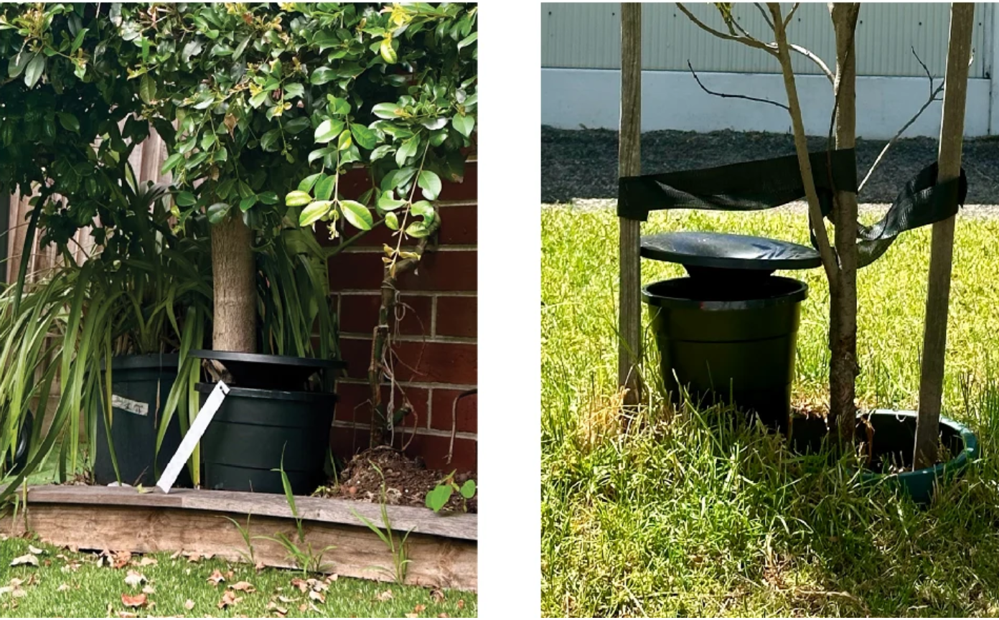
In2Care™ Mosquito Stations attempt to reduce adult populations and prevent the development of immature mosquitoes. Luring the adults in with scented water, the laid eggs and the adults are in contact with pyriproxyfen, which prevents the eggs’ normal development and growth, and the adults spread to other areas. The adult mosquitoes are also infected with Beauveria bassiana, a fungus that is deadly to them eventually.
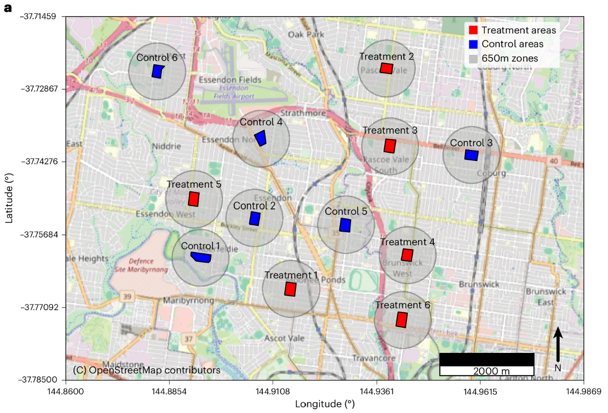
So for this study, treatment and control sites were placed across a 50 km area in the suburbs of Melbourne, Australia, with each area having 80 partipating residential houses and 100 mosquito dissemination stations each. Baseline levels of mosquito populations were taken for 3 weeks prior to the intervention, with counts taken 6 weeks later for an additional 4 weeks (Paris et al. 2026).
1.3 Goal of Statistical Analysis
Because I can’t seem to escape mixed effect models, the negative binomial regression predicts mosquito eggs with factors:
- Treatment Status
- Sampling
- Treatment Status x Sampling Interaction
- Trap Site (Random Intercept)
In R, our formula call looks like this:
2 Reproduction of the Study
2.1 Data Cleaning
Data is very nice! I removed the rows with NAs for egg counts as I’m assuming data is unavailable for those collections.
2.2 Data Summary
We can look at each study site’s mosquito eggs over time:
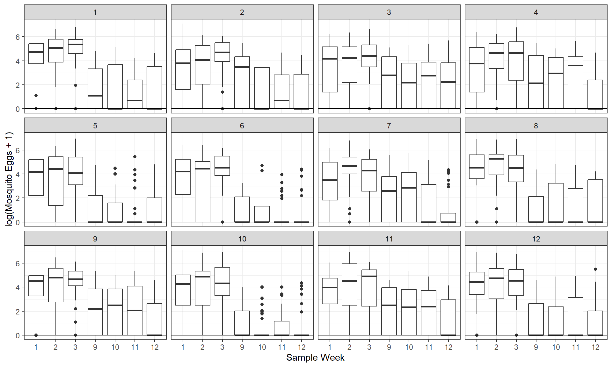
Let’s take a quick summary of our mosquito egg counts by treatment group and week:
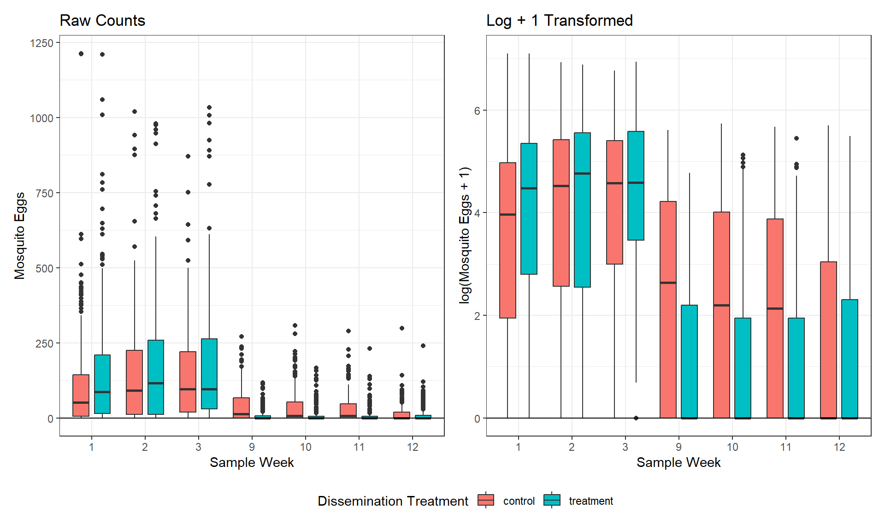
This looks promising for the effectiveness of the treament! Interestingly, the egg counts for both the control and treatment sites drops sharply after the intervention, indicating that the effects of the intervention could be having a crossover effect into the control areas.
2.3 Model Assumptions
2.3.1 Gaussian Residuals
Since our model is a generalized linear mixed effect model, we need to check the assumption that our random intercepts for our sites are gaussian:
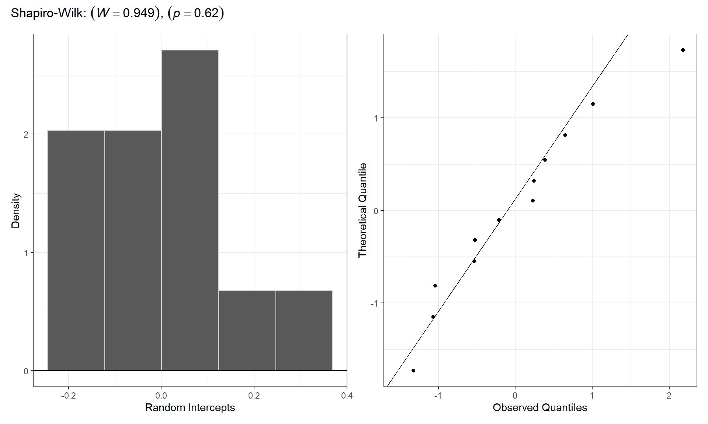
Even with a small sample (\(n=12\) sites), our random intercepts look roughly gaussian and follow the qq-plot pretty well.
2.3.2 Dispersion
Dispertion ratios aren’t quite as straightforward for mixed models, so we’ll be using this approximation function provided by Dr. Ben Bolker, a mathematical statistician at McMaster University (Bolker et al. 2025).
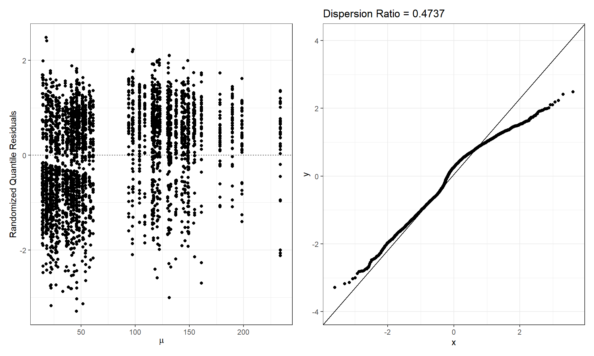
Our dispertion ratio here is extremely low. The randomized quantile residuals don’t look terrible though.
We can also check our predictions against the standardized Pearson residuals:
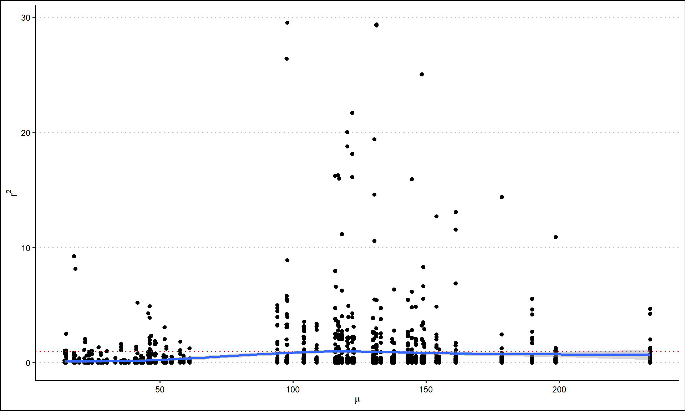
This is a better sign at least. We see a relatively flat line near 1 which is good.
2.3.3 Multicollinearity
| Term | VIF | Lower CI | Upper CI |
|---|---|---|---|
| Treatment | 1.278 | 1.229 | 1.337 |
| Week | 1.729 | 1.649 | 1.819 |
| Treatment : Week | 1.951 | 1.856 | 2.056 |
The collinearity for the model looks good, with all the VIFs under 2.
2.3.4 Influential Observations
Testing influence through leverage, Cook’s D, DFFITs, and studentized residuals is very difficult for glmer() models. Trust me. I tried.
2.3.5 Sufficient Sample Size for Predictors
Ideally we should have at least 10 events counted per predictor:
\[\begin{align*} \sum_{i=1}^{n = 3,213} \lambda_{i} = 253,237 \geq 10p = 10(3) = 30 \quad \checkmark \end{align*}\]
2.4 Model Fit
We can obtain an overall model fit:
| AIC | AICc | BIC | R2_conditional | R2_marginal | ICC | RMSE | Sigma | Score_log | Score_spherical |
|---|---|---|---|---|---|---|---|---|---|
| 26712.43 | 26712.46 | 26748.88 | 0.974 | 0.937 | 0.586 | 128.399 | 301.955 | -5.592 | 0.013 |
Our fixed effects explain 93.7% of the variance in mosquito eggs (extremely high). The total model including the random effects explains 97.4% of the variance in mosquito eggs.
2.5 Model Inference
Now to see if the treatment on the sites had an effect on the number of mosquito eggs, and if time had any additional effects:
A general summary our model gives us:
| Estimate | SE | Z | p | significance | Percent Change | |
|---|---|---|---|---|---|---|
| Intercept | 5.066 | 0.081 | 62.459 | <0.001 | *** | |
| Group = Treatment | 0.291 | 0.109 | 2.669 | 0.008 | ** | 33.8 |
| Week | -0.116 | 0.007 | -17.443 | <0.001 | *** | -11 |
| Group = Treatment : Week | -0.093 | 0.010 | -9.270 | <0.001 | *** | -8.9 |
where the percent change \(= (e^{\text{estimate}}-1) \times 100\).
Because all of the terms are included in interactions, we’ll skip the interpretations for now.
For the intercept:
- Our model predicts that we’d see \(e^{5.066} = 158.816\) eggs for a control site in week 0.
Now let’s try to untangle all those interactions (Lenth 2025).
2.6 Model Interactions
2.6.1 Effect of Mosquito Intervention
Testing the contrast of mosquito eggs by treatment group:
| Contrast | Estimate | SE | Z | p | Percent Change | Upper CI | Lower CI |
|---|---|---|---|---|---|---|---|
| control - treatment | 0.348 | 0.098 | 3.54 | <0.001 | 41.639 | 71.745 | 16.81 |
Plotting the predicted number of mosquito eggs by treatment group:
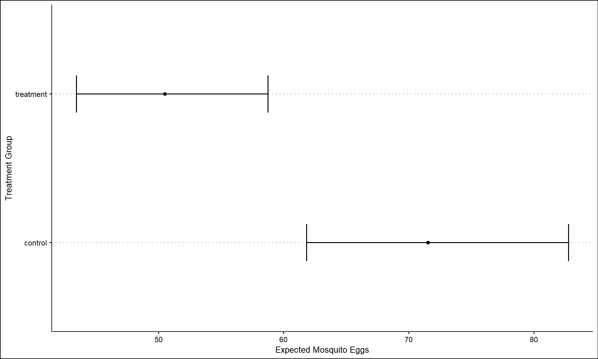
Our model predicts that a control site will have 41.6% more mosquito eggs than the treated site (95% CI: [16.8, 71.7]). As we can see from the table and plot, the global effect of treatment group is statistically discernible (\(Z = 3.540, p<0.001\)).
2.6.2 Effect of Time on Mosquito Intervention
To see if time affects the mosquito intervention’s effect:
| Treatment Group | Week Trend | SE | Z | p | adjusted-p | Percent Change | Lower CI | Upper CI |
|---|---|---|---|---|---|---|---|---|
| control | -0.116 | 0.007 | -17.443 | <0.001 | <0.001 | -10.976 | -12.131 | -9.805 |
| treatment | -0.210 | 0.008 | -27.320 | <0.001 | <0.001 | -18.913 | -20.123 | -17.684 |
Both of the trends of week across groups are statistically discernible:
- Our model predicts that for every additional week, the number of mosquito eggs we’d see for the control group would decrease by 10.976% (95% CI: [9.805, 12.131]). This effect is statistically discernible (\(Z = 17.443, p < 0.001\), adjusted-\(p < 0.001\)).
- Our model predicts that for every additional week, the number of mosquito eggs we’d see for the treatment group would decrease by 18.913% (95% CI: [17.684, 20.123]). This effect is statistically discernible (\(Z = 27.320, p < 0.001\), adjusted-\(p <0.001\)).
Visualizing those trends:
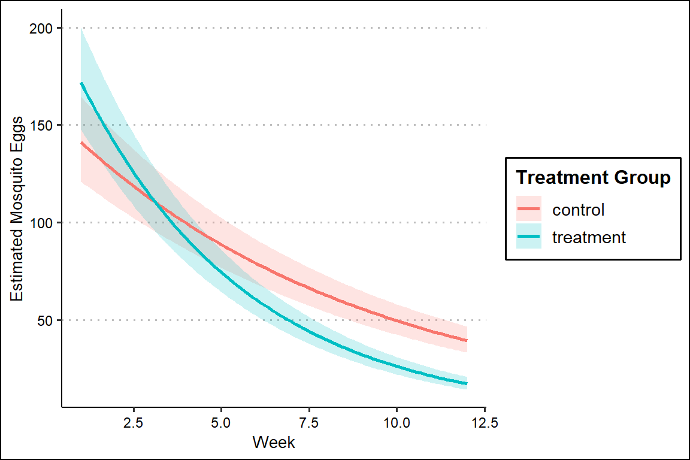
Testing the differences in those trends:
| Contrast | Estimate | SE | Z | p | Percent Change | Lower CI | Upper CI |
|---|---|---|---|---|---|---|---|
| control - treatment | 0.093 | 0.01 | 9.27 | <0.001 | 9.788 | 7.642 | 11.977 |
We can see:
- The trend for week is discernibly greater for the control versus the treatment group (\(Z = 9.27, p<0.001\)). Our model predicts that for additional week the percent change in mosquito eggs is 9.788 % greater (95% CI: [7.642, 11.977]) for the control group than the treament group.
2.7 Conclusions
The results from our model are quite convincing. Before getting into those results, I should mention that the model is quite underdispersed, so perhaps another model would be better suited for this data.
Aside from that though, the treatment has very solid evidence for reducing the number of mosquito eggs. Just looking at the overall effect, the number of expected mosquito eggs is firmly lower in the treatment group (Figure 10). Often times, biological interventions can have quite small effects even when discernible, but an estimated 40% reduction in mosquito egss is quite striking.
The effect of time, specifically across treatment groups is also very interesting. When looking at the estimated marginal trends across treatment groups, the shapes of both curves appear to indicate an exponential decay in the expected mosquito eggs (Figure 11), just with slightly greater decay in the treatment group. This lends to the idea that the treatment group helps reduce the number of mosquito eggs, but not only for those sites with the treatment, but also across the whole study area. It’d be interesting to see if this pattern would continue if they kept measuring the eggs across even more weeks.
3 Disagreements With the Article
3.1 Results
Unfortunately, while the authors of this article and I come to similar conclusions about the effectiveness of the treatment, the way we went about assessing those differences were quite different, and make direct comparisons challenging.
A direct comparison I do think I can make is against this sentence in their results:
” We first fitted a generalized linear mixed model (GLMM) that indicated the number of eggs per trap was influenced by the sampling area as well as the sampling week (z = 78.05, P < 0.001)”
I think their wording here is a bit strange. I believe they’re referring to the reaction term, but I wouldn’t necessarily say that I would interpret the coefficient from an interaction term in that way. If they’re referring to the individual terms, why give one Z-statistic and \(p\)-value? If we assume they’re referring to the interaction term, their statistics are much much larger than my model came up with (Table 3). When I went looking for answers in their code as to why this discrepancy is there, I noticed all of their code in their repository is in python, though they say in the article their analysis was done in R.
The second large claim they make in the results is:
“Post hoc comparisons showed no significant differences in egg counts between the control and treatment areas in the 3 weeks of baseline egg counting undertaken before the intervention. The first sampling after the 8-week intervention was completed, showed significantly lower egg counts at all treatment areas compared with all control areas (Fig. 2a and Supplementary Table 3). This trend continued in the second week of egg counts after the intervention. Egg numbers at treatment areas started to merge with control area egg counts in weeks 3 and 4 after the cessation of the intervention (Supplementary Table 3, and Fig. 2a).”
This is a very different way than I analyzed their data. If I attempt to analyze the estimated marginal means at each of the weeks, instead of looking at the trend of weeks:
| Group | Week | Estimate | SE | Lower CI | Upper CI |
|---|---|---|---|---|---|
| control | 1 | 141.134 | 11.081 | 121.003 | 164.614 |
| treatment | 1 | 171.971 | 13.286 | 147.807 | 200.085 |
| control | 2 | 125.643 | 9.602 | 108.166 | 145.945 |
| treatment | 2 | 139.447 | 10.507 | 120.302 | 161.638 |
| control | 3 | 111.853 | 8.373 | 96.589 | 129.530 |
| treatment | 3 | 113.074 | 8.388 | 97.772 | 130.770 |
| control | 9 | 55.680 | 4.332 | 47.804 | 64.853 |
| treatment | 9 | 32.143 | 2.676 | 27.303 | 37.841 |
| control | 10 | 49.568 | 3.978 | 42.354 | 58.012 |
| treatment | 10 | 26.064 | 2.270 | 21.974 | 30.915 |
| control | 11 | 44.128 | 3.670 | 37.491 | 51.939 |
| treatment | 11 | 21.134 | 1.932 | 17.668 | 25.280 |
| control | 12 | 39.284 | 3.397 | 33.160 | 46.541 |
| treatment | 12 | 17.137 | 1.647 | 14.195 | 20.690 |
| Contrast | Week | Estimate | SE | Z | p | adjusted-p | Percent Change | Lower CI | Upper CI |
|---|---|---|---|---|---|---|---|---|---|
| control - treatment | 1 | -0.198 | 0.105 | -1.887 | 0.059 | 0.083 | -17.931 | -33.161 | 0.768 |
| control - treatment | 2 | -0.104 | 0.101 | -1.029 | 0.303 | 0.354 | -9.899 | -26.119 | 9.883 |
| control - treatment | 3 | -0.011 | 0.099 | -0.110 | 0.912 | 0.912 | -1.079 | -18.480 | 20.035 |
| control - treatment | 9 | 0.549 | 0.105 | 5.253 | <0.001 | <0.001 | 73.226 | 41.117 | 112.642 |
| control - treatment | 10 | 0.643 | 0.109 | 5.905 | <0.001 | <0.001 | 90.182 | 53.641 | 135.413 |
| control - treatment | 11 | 0.736 | 0.114 | 6.466 | <0.001 | <0.001 | 108.797 | 67.036 | 160.998 |
| control - treatment | 12 | 0.830 | 0.119 | 6.942 | <0.001 | <0.001 | 129.234 | 81.370 | 189.729 |
Looking at it this way, we can see that their first sentence makes sense. There are no discernible differences between the control and the treatment groups in the three weeks before the intervention, which makes sense. For the first two weeks after the intervention, weeks 9 & 10, we can now see that the difference between the two treatment groups is strongly discernible for both weeks. The part where I’m now confused, is when they say that the “Egg numbers at treatment areas started to merge with control area egg counts in weeks 3 and 4 after the cessation of the intervention.” I’m not sure what led them to conclude that, given the estimated marginal means at weeks 3 & 4 after the intervention (weeks 11 & 12 in the model), are even more strongly different for the following weeks between the control and the treatment groups (Table 8). If you’re wondering if their reference to figure 2a and Supplementary Table 3 clear this up, this is Figure 2a:
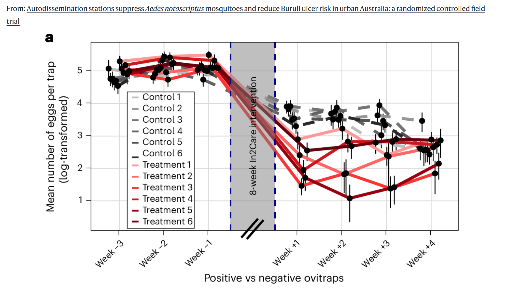
As you can see, not a figure which indicates statistics. Lastly, Supplementary Table 3 is simply the raw data for the study.
Sadly, that’s where the discussion of the results for this analysis ends in their results section, so we’re left on a bit of a cliffhanger for a lot of these results.
On one last interesting note from the results, the authors mention a period of low amounts of rain during the middle weeks of the study, which could explain a lot of the reduction in mosquito egg counts across both treatment groups. While this is helpful in adding context, I wonder why they didn’t just include rainfall as a factor in the model if that data was available, instead of doing a separate analysis to test if rainfall alone was predictive of mosquito egg counts. The same could be said of temperature data.
3.2 Discussion
In the discussion, as well as the abstract, the authors bring up this statistic as a large piece of evidence for the effectiveness of the intervention:
“The 70% reduction in egg counts in intervention areas compared to control areas we observed after the 8-week trial confirms the effectiveness of autodissemination systems for mosquito population reduction in urban settings.”
I think the researchers might be slightly misinterpreting the data here. When they claim that there is a 70% reduction in egg counts in the intervention areas compared to the control groups, I think they really mean that the control groups have about 70% more mosquito eggs compared to the treatment groups, which is slightly different, and aligns with what my model predicts (Table 8). Also, if they wanted to have a more convincing statistic, I don’t understand why they wouldn’t go with the larger difference, which is at week 12, when the control groups have 129% more mosquito eggs than the treatment groups (Table 8).
So while the data is quite convincing for the efficacy of these interventions, these, what I would regard as misinterpretations or unclear results, unfortunatenly weaken their findings and message in my opinion.
4 Acknowledgement
I would like to thank the researchers who published this paper: Véronique Paris, Andrew H. Buultjens, Nicholas Bell, Thomas L. Schmidt, Wendy M. Bamberg, Michael T. Birrell, Finn Romanes, Catarina A. Antao, Maria Globan, Caroline Lavender, Katherine Bond, Sally Dougall, Jake A. Lacey, Yichen Zhai, Peihong Guo, Norelle L. Sherry, Katherine B. Gibney, Jue Tao Lim, Paul D. R. Johnson, Timothy P. Stinear & Ary A. Hoffmann. Transparency in data and code availability is hugely important for research ethics, and it makes my project possible.
5 AI Use
All of the guidance given by generative AI for this article can be found in this conversation.
6 Statistical Packages Used
- tidyverse for… everything it’s tidyverse (Wickham et al. 2019)
- ggplot2 for plotting (Wickham 2016)
- ggthemes for theme_clean() (Arnold 2024)
- patchwork for combined plots (Pedersen 2025)
- glmmTMB for inference of negative binomial GLMM model (Brooks et al. 2017)
- performance for model fit statistics (Lüdecke et al. 2021)
- emmeans for interaction analysis (Lenth 2025)
References
Arnold, Jeffrey B. 2024. Ggthemes: Extra Themes, Scales and Geoms for ’Ggplot2’. https://CRAN.R-project.org/package=ggthemes.
Brooks, Mollie E., Kasper Kristensen, Koen J. van Benthem, et al. 2017. “glmmTMB Balances Speed and Flexibility Among Packages for Zero-Inflated Generalized Linear Mixed Modeling.” The R Journal 9 (2): 378–400. https://doi.org/10.32614/RJ-2017-066.
Lenth, Russell V. 2025. Emmeans: Estimated Marginal Means, Aka Least-Squares Means. https://CRAN.R-project.org/package=emmeans.
Lüdecke, Daniel, Mattan S. Ben-Shachar, Indrajeet Patil, Philip Waggoner, and Dominique Makowski. 2021. “performance: An R Package for Assessment, Comparison and Testing of Statistical Models.” Journal of Open Source Software 6 (60): 3139. https://doi.org/10.21105/joss.03139.
Paris, Véronique, Andrew H. Buultjens, Nicholas Bell, et al. 2026. “Autodissemination Stations Suppress Aedes Notoscriptus Mosquitoes and Reduce Buruli Ulcer Risk in Urban Australia: A Randomized Controlled Field Trial.” Nature Microbiology 11 (9): 2493–504. https://doi.org/10.1038/s41564-026-02439-8.
Pedersen, Thomas Lin. 2025. Patchwork: The Composer of Plots. https://CRAN.R-project.org/package=patchwork.
statisticsmatt. 2020. Mean and Variance Negative Binomial Distribution. YouTube. https://www.youtube.com/watch?v=bMrISdCWXes.
Wickham, Hadley. 2016. Ggplot2: Elegant Graphics for Data Analysis. Springer-Verlag New York. https://ggplot2.tidyverse.org.
Wickham, Hadley, Mara Averick, Jennifer Bryan, et al. 2019. “Welcome to the tidyverse.” Journal of Open Source Software 4 (43): 1686. https://doi.org/10.21105/joss.01686.